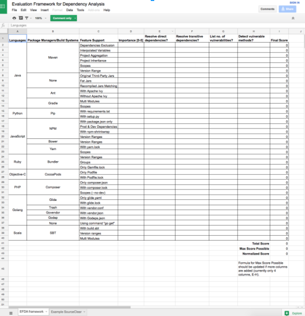

EFDA: a benchmark for software composition analysis tools
At SourceClear, we build tools that help customers detect and manage security vulnerabilities in the open source libraries they use. We constantly ask ourselves this question, “What makes a good OSS management tool?” At the end of the day, we believe, it comes down to data. Up-to-date and reliable data. If your project is using the the latest version of Library A which was published 1 day ago, the tool must be able to detect it. If Library A has 3 CVEs, the tool must be able to inform you of that, at least. If the library has vulnerabilities that are not published to the CVE database yet, can the tool find them?
At SourceClear, we believe data is king. However, even before those data can be retrieved, an OSS management tool must be able to scan the project. Over these years, we have encountered different kinds of project setups that could cause an OSS management tool to fail. The tool might fail to scan the project completely or report a dependency version that is different from what the package manager actually resolves to. Because of this, we created various sample projects to keep track of the languages, package managers, and project setups that our Lightman Scanner supports.
Open-Sourcing EFDA
Today, we are releasing a collection of sample projects as a single open source project called Evaluation Framework for Dependency Analysis (EFDA). The code repo can be found here. This repository will be managed by the Continuous-Security Security project which we will be announcing in a few weeks. In this repository, you will find projects implemented in various languages and with different setups that aim to test the features of an OSS management tool. The projects contain details such as the number of dependencies, whether they are direct or transitive dependencies, and the number of vulnerabilities present. In this repository, you will also find a spreadsheet that lists the features being tested. This spreadsheet allows you to customize the importance of the features and compute a score to determine how well an OSS management tool fits your needs.

Our Guiding Principles
When we set up these example projects, we followed a set of guiding principles.
The basic set of test cases
If we are checking whether a tool supports a particular package manager, what is the minimal set of features we need to test for us to say “yes, this tool supports this package manager reasonably”? Take for example, npm projects. Projects using npm declare their dependencies in package.json. It is common for users of npm to declare version ranges in package.json instead of sticking to a specific version. Another common setup is to separate dependencies into production and development dependencies. How about npm-shrinkwrap.json which helps to lock dependencies’ versions? As such, you can find in the npm folder project setups that test each scenario specifically. The same guiding principle is applied when we create example projects for other languages/package managers.
Independent, self-contained test cases
Of course, in a real-world scenario we would expect a project to use more than one feature from its package manager. But we want to make the evaluation process simpler and debugging easier. Each project setup tests one scenario specifically. If a tool fails to report the expected number of dependencies or vulnerabilities for the project, we can safely say that it does not support the feature well enough without digging deeper to find out exactly which feature of the package manager is breaking the tool’s analysis process.
Breadth and depth of coverage
There are 2 methods to evaluate a dependency analysis tool. The first method is to look at how many package managers it supports - the breadth of its coverage. The second method is to look at how well it supports each package manager - the depth of its coverage. EFDA checks both the breadth and depth of coverage. This is why at the time of this writing, it has projects implemented in 8 programming languages, 15 package managers, and many more various setups for those package managers.
Configurable weightage of features
Some features may be important to a group of users but not to another group. Some users may not even care if a particular language/package manager is being supported if they are not using them. In the spreadsheet that accompanies the EFDA repository, users can customize the importance (0-5) of each feature. A final score will be computed based on the importance given to each feature.
Contributions
Our goal for releasing this repository is to help everyone who are using open source libraries decide which tool is most suitable for them. You can help make the project better and more comprehensive by adding project setups that are missing in the repository. We look forward to your contributions and comments!